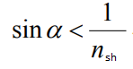
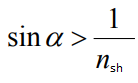
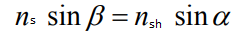
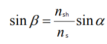
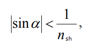
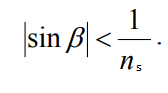
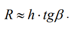
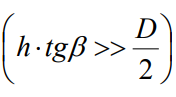
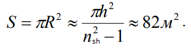

Kemani ichidagi kuzatuvchi faqat  holatdagi nurlarni ko'ra oladi, aks  holatda to'la ichki qaytish kuzatiladi va nur kuzatuvchiga tushmaydi.
Bu yerda β burchak uchun

Bundan
 ga kelish mumkin. Bu yerda nshoynaning nur sindirish ko'rsatkichi.
 bo'lsa, u holda  bo'ladi.
Shuning uchun kuzatuvchi faqatgina illuminatorga β burchakdan tushadigan obyektlarni ko'rishi mumkin ya'ni

hamda  ekanligi tufayli illuminator oynasining radiusi hisobga olinmaydi.
Demak,

Javob: 82m2